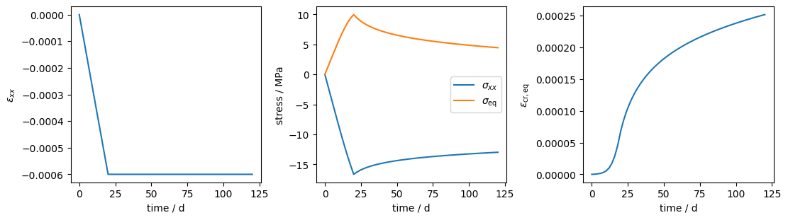
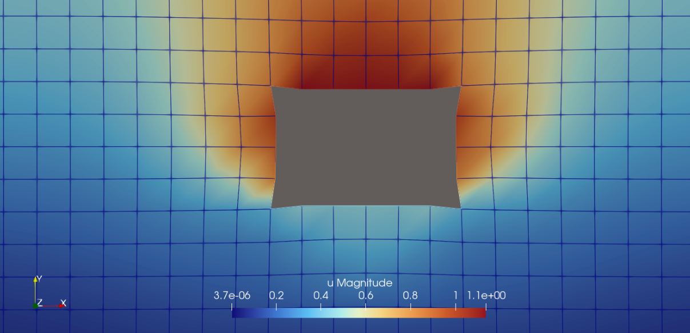

Global problem with internal variables and sub-Newton: Norton creep
The same small-strain Norton model is used twice: first as a strain-controlled plane-strain material point via dae.TimeSteppingManager, then as a SimState finite element problem with a rectangular excavation in an initially lithostatic salt block.
[6]:
from functools import partial
from pathlib import Path
import jax
import jax.numpy as jnp
import meshio
import numpy as np
from autopdex import SimState, dae, spaces
from autopdex.models import km_tools as km
jax.config.update("jax_enable_x64", True)
Material model
Units are MPa, m and days. Plane strain is embedded in the compact Kelvin-Mandel vector [xx, yy, zz, sqrt(2) xy]:
All dot products below are Kelvin-Mandel products and therefore represent tensor contractions. With elastic strain
the elastic strain energy density and stress are
The deviatoric and equivalent stresses are
The two-term Norton creep law is integrated locally as
[7]:
E = 25_000.0
nu = 0.25
lam = E * nu / ((1.0 + nu) * (1.0 - 2.0 * nu))
mu = E / (2.0 * (1.0 + nu))
sigma_ref = 1.0
A1, n1 = 1.0e-7, 1.0
A2, n2 = 1.0e-10, 5.0
zero4 = jnp.zeros(4)
def strain_energy(eps_e):
return mu * (eps_e @ eps_e) + 0.5 * lam * km.trace(eps_e) ** 2
def total_stress(eps, eps_cr, sigma_offset=zero4):
return jax.jacrev(strain_energy)(eps - eps_cr) + sigma_offset
def equivalent_stress(sig):
s = km.dev(sig)
return jnp.sqrt(1.5 * (s @ s) + 1.0e-30)
def norton_creep(q_fun, t, settings):
q, q_t = jax.jvp(q_fun, (t,), (1.0,))
sig = total_stress(settings["eps"], q["eps_cr"], settings["sigma_offset"])
s = km.dev(sig)
sig_eq = equivalent_stress(sig)
eq_rate = A1 * (sig_eq / sigma_ref) ** n1 + A2 * (sig_eq / sigma_ref) ** n2
return q_t["eps_cr"] - eq_rate * 1.5 * s / sig_eq
1. Strain-controlled material point
The material point uses the prescribed compressive strain
[ ]:
def strain_control(t):
eps_xx = -6.0e-4 * jnp.minimum(t / 20.0, 1.0)
return jnp.asarray([eps_xx, 0.0, 0.0, 0.0])
def material_point_model(q_fun, t, settings):
return norton_creep(q_fun, t, {"eps": strain_control(t), "sigma_offset": zero4})
def material_point_output(q_fun, t, settings):
q = q_fun(t)
eps = strain_control(t)
sig = total_stress(eps, q["eps_cr"])
return {
"eps_xx": eps[0],
"eps_cr_eq": jnp.sqrt(2.0 / 3.0 * (q["eps_cr"] @ q["eps_cr"])),
"sig_xx": sig[0],
"sig_eq": equivalent_stress(sig),
}
local_manager = dae.TimeSteppingManager(
{
"dae": material_point_model,
"time integrators": {"eps_cr": dae.BackwardEuler()},
"verbose": 0,
},
root_solver=partial(dae.newton_solver, atol=1e-13, rtol=1e-11),
save_policy=dae.SaveAllPolicy(),
postprocessing_fun=material_point_output,
)
result = local_manager.run({"eps_cr": zero4}, dt0=2.0, t_final=120.0, num_time_steps=60)
Progress: 3%, Time: 4.00e+00, dt: 2.00e+00, iterations: 1
Progress: 8%, Time: 1.00e+01, dt: 2.00e+00, iterations: 2
Progress: 13%, Time: 1.60e+01, dt: 2.00e+00, iterations: 2
Progress: 18%, Time: 2.20e+01, dt: 2.00e+00, iterations: 3
Progress: 23%, Time: 2.80e+01, dt: 2.00e+00, iterations: 2
Progress: 28%, Time: 3.40e+01, dt: 2.00e+00, iterations: 2
Progress: 33%, Time: 4.00e+01, dt: 2.00e+00, iterations: 2
Progress: 38%, Time: 4.60e+01, dt: 2.00e+00, iterations: 2
Progress: 43%, Time: 5.20e+01, dt: 2.00e+00, iterations: 2
Progress: 48%, Time: 5.80e+01, dt: 2.00e+00, iterations: 2
Progress: 53%, Time: 6.40e+01, dt: 2.00e+00, iterations: 2
Progress: 58%, Time: 7.00e+01, dt: 2.00e+00, iterations: 2
Progress: 63%, Time: 7.60e+01, dt: 2.00e+00, iterations: 2
Progress: 68%, Time: 8.20e+01, dt: 2.00e+00, iterations: 2
Progress: 73%, Time: 8.80e+01, dt: 2.00e+00, iterations: 2
Progress: 78%, Time: 9.40e+01, dt: 2.00e+00, iterations: 2
Progress: 83%, Time: 1.00e+02, dt: 2.00e+00, iterations: 2
Progress: 88%, Time: 1.06e+02, dt: 2.00e+00, iterations: 2
Progress: 93%, Time: 1.12e+02, dt: 2.00e+00, iterations: 2
Progress: 98%, Time: 1.18e+02, dt: 2.00e+00, iterations: 2
Visualization
[ ]:
hist = result.history
valid = np.isfinite(np.asarray(hist.t))
t = np.asarray(hist.t)[valid]
user = {key: np.asarray(value)[valid] for key, value in hist.user.items()}
import matplotlib.pyplot as plt
fig, ax = plt.subplots(1, 3, figsize=(11, 3), constrained_layout=True)
ax[0].plot(t,user["eps_xx"])
ax[0].set_xlabel("time / d")
ax[0].set_ylabel(r"$\epsilon_{xx}$")
ax[1].plot(t, user["sig_xx"], label=r"$\sigma_{xx}$")
ax[1].plot(t, user["sig_eq"], label=r"$\sigma_\mathrm{eq}$")
ax[1].set_xlabel("time / d")
ax[1].set_ylabel("stress / MPa")
ax[1].legend()
ax[2].plot(t, user["eps_cr_eq"])
ax[2].set_xlabel("time / d")
ax[2].set_ylabel(r"$\epsilon_\mathrm{cr,eq}$")
plt.show()

2. SimState excavation problem
The block is loaded by self weight and a lithostatic far-field traction on the top boundary. With \(y\) measured upward from the block center,
and the stress offset used by the constitutive update is
The plane-strain kinematics used in weak_form are
Together with the separately added Neumann contribution, the weak form is
The strong displacement boundary conditions and the weak top load are
The excavation boundary remains traction-free because no inhomogeneous weak boundary load is added there.
[ ]:
mesh_path = Path("meshes/norton_creep_rectangular_hole.vtu")
mesh = meshio.read(mesh_path)
width, height = 80.0, 80.0
rho_salt = 2160.0
gravity = 9.81
depth_at_center = 750.0
unit_weight = rho_salt * gravity / 1.0e6 # MPa / m
def lithostatic_pressure(x):
return unit_weight * (depth_at_center - x[1])
[ ]:
def weak_form(ctx: SimState.ModelContext):
x = ctx.trial_ansatz["physical coor"](ctx.x_int)
p = lithostatic_pressure(x)
sigma0 = jnp.asarray([-p, -p, -p, 0.0])
grad_u = jax.jacfwd(ctx.trial_ansatz["displacement"])(ctx.x_int, ctx.t)
eps = km.pack_z_shear_zero(grad_u)
if ctx.mode in ("weak form", "internal variables"):
new_int_vars = ctx.solve_local("creep", inputs={"eps": eps, "sigma_offset": sigma0})
if ctx.mode == "internal variables":
return new_int_vars
sig = total_stress(eps, new_int_vars["eps_cr"], sigma0)
grad_v = jax.jacfwd(ctx.test_ansatz["displacement"])(ctx.x_int)
v = ctx.test_ansatz["displacement"](ctx.x_int)
body_force = jnp.asarray([0.0, -unit_weight])
return sig @ km.pack_z_shear_zero(grad_v) - body_force @ v
if ctx.mode == "output":
u = ctx.trial_ansatz["displacement"](ctx.x_int, ctx.t)
sig = total_stress(eps, ctx.internal_vars["eps_cr"], sigma0)
return {
"u": u,
"eps_cr": ctx.internal_vars["eps_cr"],
"sig_eq": equivalent_stress(sig),
"sig_xx": sig[0],
"sig_yy": sig[1],
"sig_zz": sig[2],
"sig_xy": sig[3] / jnp.sqrt(2.0),
}
[ ]:
sim = SimState({
"displacement": spaces.H1(order=2, dim=2, field_dimension=2),
"eps_cr": spaces.InternalVariable(field_dimension=4),
})
sim.import_mesh(mesh)
sim.add_temporal_discretization({
"displacement": dae.NoTimeDerivative(),
"eps_cr": dae.BackwardEuler(),
})
sim.add_local_subsystem(
"creep",
norton_creep,
fields=("eps_cr",),
root_solver=partial(dae.newton_solver, atol=1e-14, rtol=1e-12),
)
sim.add_model("__all__", "weak form", weak_form, internal_variables=("eps_cr",))
sim.add_strong_bc("displacement", lambda x: jnp.isclose(x[0], -0.5 * width), lambda x, t: 0.0, index=0)
sim.add_strong_bc("displacement", lambda x: jnp.isclose(x[0], 0.5 * width), lambda x, t: 0.0, index=0)
sim.add_strong_bc("displacement", lambda x: jnp.isclose(x[1], -0.5 * height), lambda x, t: 0.0, index=1)
sim.add_weak_bc("displacement", lambda x: jnp.isclose(x[1], 0.5 * height), lambda x, t: jnp.asarray([0.0, -lithostatic_pressure(x)]))
sim.set_postprocessing_policy(
dae.SaveEquidistantPolicy(num_points=30),
result_folder_name="norton_creep.res",
)
sim.set_step_size_controller(dae.RootIterationController(target_niters=8, max_step_size=50.0))
sim.initialize(verbose=1)
sim.set_root_solver(partial(dae.newton_solver, atol=1e-9, rtol=1e-7))
sim.prepare()
sim = sim.run(dt0=2.0, time_span=3000.0, num_time_steps=1000)
print(f"accepted steps = {int(sim.num_accepted)}, final time = {float(sim.settings['current time']):.1f} d")
Linear solver: Pardiso(lu); 32 threads.
Iteration 1, Residual norm: 0.8703147090298352
Iteration 2, Residual norm: 0.11392621541074148
Iteration 3, Residual norm: 0.002784154047653472
Iteration 4, Residual norm: 2.429917191604873e-06
Iteration 5, Residual norm: 1.323047195918442e-08
Iteration 1, Residual norm: 0.07046536440792059
Iteration 2, Residual norm: 0.0015103900747676033
Iteration 3, Residual norm: 1.0171819275356981e-06
Iteration 4, Residual norm: 1.4655309009388022e-08
Iteration 1, Residual norm: 0.06200617880926995
Iteration 2, Residual norm: 0.0014424988693897613
Iteration 3, Residual norm: 1.0741481588443244e-06
Iteration 4, Residual norm: 1.8146856555779567e-08
Iteration 1, Residual norm: 0.06117959594928221
Iteration 2, Residual norm: 0.0016102375058392748
Iteration 3, Residual norm: 1.461409465188693e-06
Iteration 4, Residual norm: 2.304596826187511e-08
Iteration 1, Residual norm: 0.06419768943026878
Iteration 2, Residual norm: 0.0019512776345168414
Iteration 3, Residual norm: 2.2861110069116263e-06
Iteration 4, Residual norm: 3.167138678624326e-08
Iteration 1, Residual norm: 0.06998075462080253
Iteration 2, Residual norm: 0.002485935604535741
Iteration 3, Residual norm: 3.900501354219111e-06
Iteration 4, Residual norm: 4.431102676528355e-08
Iteration 1, Residual norm: 0.0782395798391031
Iteration 2, Residual norm: 0.0032724549172510296
Iteration 3, Residual norm: 7.0604914392527084e-06
Iteration 4, Residual norm: 5.7708540160858634e-08
Iteration 1, Residual norm: 0.08901779205581728
Iteration 2, Residual norm: 0.004404559423507317
Iteration 3, Residual norm: 1.3334925470977597e-05
Iteration 4, Residual norm: 6.98018282320739e-08
Iteration 1, Residual norm: 0.1025229878107223
Iteration 2, Residual norm: 0.006015880597374486
Iteration 3, Residual norm: 2.5945234803643224e-05
Iteration 4, Residual norm: 7.934940299870176e-08
Iteration 1, Residual norm: 0.11902538996577716
Iteration 2, Residual norm: 0.008281528331944218
Iteration 3, Residual norm: 5.1292455218527833e-05
Iteration 4, Residual norm: 8.382046829224766e-08
Iteration 1, Residual norm: 0.1387752351305113
Iteration 2, Residual norm: 0.011410959657513778
Iteration 3, Residual norm: 0.00010145834033963265
Iteration 4, Residual norm: 9.641654482902231e-08
Iteration 1, Residual norm: 0.16194475336401867
Iteration 2, Residual norm: 0.0156313781002074
Iteration 3, Residual norm: 0.00019767932207243844
Iteration 4, Residual norm: 1.1801626457218626e-07
Progress: 3%, Time: 1.03e+02, dt: 2.76e+01, iterations: 4
Iteration 1, Residual norm: 0.18860992208264993
Iteration 2, Residual norm: 0.02116669028388541
Iteration 3, Residual norm: 0.00037434145750958245
Iteration 4, Residual norm: 1.8461933693835395e-07
Iteration 1, Residual norm: 0.2187663354831898
Iteration 2, Residual norm: 0.028218345151179013
Iteration 3, Residual norm: 0.0006824430705138653
Iteration 4, Residual norm: 4.607814863473072e-07
Iteration 1, Residual norm: 0.25235665332759283
Iteration 2, Residual norm: 0.03695230588213608
Iteration 3, Residual norm: 0.0011912607342822188
Iteration 4, Residual norm: 1.3726833899113829e-06
Iteration 5, Residual norm: 2.0372452711790226e-07
Iteration 1, Residual norm: 0.2759572052366413
Iteration 2, Residual norm: 0.04360072390068423
Iteration 3, Residual norm: 0.0016638723543820032
Iteration 4, Residual norm: 2.6856611477233794e-06
Iteration 5, Residual norm: 2.3228692938152302e-07
Progress: 8%, Time: 2.59e+02, dt: 5.00e+01, iterations: 5
Iteration 1, Residual norm: 0.27551802429721034
Iteration 2, Residual norm: 0.043493427319163266
Iteration 3, Residual norm: 0.001637187129426745
Iteration 4, Residual norm: 2.599487301235191e-06
Iteration 5, Residual norm: 2.3772748709110648e-07
Iteration 1, Residual norm: 0.27529143067430956
Iteration 2, Residual norm: 0.04341985023145303
Iteration 3, Residual norm: 0.0016171466419412075
Iteration 4, Residual norm: 2.532210838970707e-06
Iteration 5, Residual norm: 2.393946486655723e-07
Iteration 1, Residual norm: 0.2751616805451854
Iteration 2, Residual norm: 0.0433632976774891
Iteration 3, Residual norm: 0.0016016278903109495
Iteration 4, Residual norm: 2.480627718324511e-06
Iteration 5, Residual norm: 2.401514094917875e-07
Progress: 13%, Time: 4.09e+02, dt: 5.00e+01, iterations: 5
Iteration 1, Residual norm: 0.27507222603040415
Iteration 2, Residual norm: 0.04331499712558296
Iteration 3, Residual norm: 0.0015892878577948694
Iteration 4, Residual norm: 2.438833415357591e-06
Iteration 5, Residual norm: 2.3895604939124106e-07
Iteration 1, Residual norm: 0.2749957424993923
Iteration 2, Residual norm: 0.043270446306383624
Iteration 3, Residual norm: 0.0015792505048265104
Iteration 4, Residual norm: 2.405473223263346e-06
Iteration 5, Residual norm: 2.396867286390501e-07
Iteration 1, Residual norm: 0.2749196191661987
Iteration 2, Residual norm: 0.043227459474683004
Iteration 3, Residual norm: 0.0015709283883942487
Iteration 4, Residual norm: 2.376698194518179e-06
Iteration 5, Residual norm: 2.406092037618662e-07
Progress: 18%, Time: 5.59e+02, dt: 5.00e+01, iterations: 5
Iteration 1, Residual norm: 0.27483871384631137
Iteration 2, Residual norm: 0.043185096737444154
Iteration 3, Residual norm: 0.001563913968478
Iteration 4, Residual norm: 2.352808260256001e-06
Iteration 5, Residual norm: 2.385525284946109e-07
Iteration 1, Residual norm: 0.274751631097939
Iteration 2, Residual norm: 0.04314306426206516
Iteration 3, Residual norm: 0.0015579226379081258
Iteration 4, Residual norm: 2.332645309144682e-06
Iteration 5, Residual norm: 2.3818135066350288e-07
Iteration 1, Residual norm: 0.2746587744706357
Iteration 2, Residual norm: 0.04310138797355583
Iteration 3, Residual norm: 0.0015527467061914495
Iteration 4, Residual norm: 2.3154887200142016e-06
Iteration 5, Residual norm: 2.3788467066421956e-07
Progress: 23%, Time: 7.09e+02, dt: 5.00e+01, iterations: 5
Iteration 1, Residual norm: 0.27456131805786493
Iteration 2, Residual norm: 0.04306023288222291
Iteration 3, Residual norm: 0.001548233361825896
Iteration 4, Residual norm: 2.3008199566854432e-06
Iteration 5, Residual norm: 2.3914409005230875e-07
Iteration 1, Residual norm: 0.2744606762950566
Iteration 2, Residual norm: 0.0430198062211216
Iteration 3, Residual norm: 0.001544266935508154
Iteration 4, Residual norm: 2.2877952611357264e-06
Iteration 5, Residual norm: 2.3850353066223573e-07
Iteration 1, Residual norm: 0.2743582378007472
Iteration 2, Residual norm: 0.042980307719708045
Iteration 3, Residual norm: 0.001540758158021327
Iteration 4, Residual norm: 2.2766550355725653e-06
Iteration 5, Residual norm: 2.3844647126022957e-07
Progress: 28%, Time: 8.59e+02, dt: 5.00e+01, iterations: 5
Iteration 1, Residual norm: 0.2742552387079736
Iteration 2, Residual norm: 0.042941909528335646
Iteration 3, Residual norm: 0.0015376367144462014
Iteration 4, Residual norm: 2.267202742561663e-06
Iteration 5, Residual norm: 2.381634672536397e-07
Iteration 1, Residual norm: 0.27415271890067794
Iteration 2, Residual norm: 0.042904743321423924
Iteration 3, Residual norm: 0.0015348474068837869
Iteration 4, Residual norm: 2.2582191901946446e-06
Iteration 5, Residual norm: 2.3841731489192385e-07
Iteration 1, Residual norm: 0.27405151564542407
Iteration 2, Residual norm: 0.04286890445664369
Iteration 3, Residual norm: 0.001532345274265725
Iteration 4, Residual norm: 2.250888948672843e-06
Iteration 5, Residual norm: 2.383437761561388e-07
Progress: 33%, Time: 1.01e+03, dt: 5.00e+01, iterations: 5
Iteration 1, Residual norm: 0.27395227957546375
Iteration 2, Residual norm: 0.042834454160712715
Iteration 3, Residual norm: 0.0015300926001526102
Iteration 4, Residual norm: 2.2441434258085032e-06
Iteration 5, Residual norm: 2.384016705863096e-07
Iteration 1, Residual norm: 0.27385549493597644
Iteration 2, Residual norm: 0.04280142446647941
Iteration 3, Residual norm: 0.0015280584060455673
Iteration 4, Residual norm: 2.2384256326457913e-06
Iteration 5, Residual norm: 2.38406594747399e-07
Iteration 1, Residual norm: 0.27376151232911783
Iteration 2, Residual norm: 0.04276982186648801
Iteration 3, Residual norm: 0.0015262185935020912
Iteration 4, Residual norm: 2.2330711727474904e-06
Iteration 5, Residual norm: 2.3828933162707282e-07
Progress: 38%, Time: 1.16e+03, dt: 5.00e+01, iterations: 5
Iteration 1, Residual norm: 0.2736705647303479
Iteration 2, Residual norm: 0.042739636069341766
Iteration 3, Residual norm: 0.0015245492681406655
Iteration 4, Residual norm: 2.2281926018323325e-06
Iteration 5, Residual norm: 2.3807385559461077e-07
Iteration 1, Residual norm: 0.2735827950538158
Iteration 2, Residual norm: 0.04271084034138744
Iteration 3, Residual norm: 0.0015230322761325679
Iteration 4, Residual norm: 2.224217989008669e-06
Iteration 5, Residual norm: 2.3970353309336777e-07
Iteration 1, Residual norm: 0.27349827394475706
Iteration 2, Residual norm: 0.042683397734336194
Iteration 3, Residual norm: 0.0015216518951599554
Iteration 4, Residual norm: 2.220783587840727e-06
Iteration 5, Residual norm: 2.395319071172633e-07
Progress: 43%, Time: 1.31e+03, dt: 5.00e+01, iterations: 5
Iteration 1, Residual norm: 0.27341701607217855
Iteration 2, Residual norm: 0.04265726371692847
Iteration 3, Residual norm: 0.0015203942000642345
Iteration 4, Residual norm: 2.217409621330088e-06
Iteration 5, Residual norm: 2.3899042003988767e-07
Iteration 1, Residual norm: 0.2733389930166539
Iteration 2, Residual norm: 0.042632387748962115
Iteration 3, Residual norm: 0.0015192464593868926
Iteration 4, Residual norm: 2.2147687297242868e-06
Iteration 5, Residual norm: 2.4021745269279607e-07
Iteration 1, Residual norm: 0.2732641471431458
Iteration 2, Residual norm: 0.04260871705342757
Iteration 3, Residual norm: 0.00151819867085767
Iteration 4, Residual norm: 2.2122461076655738e-06
Iteration 5, Residual norm: 2.4028448801889186e-07
Progress: 48%, Time: 1.46e+03, dt: 5.00e+01, iterations: 5
Iteration 1, Residual norm: 0.2731923951345769
Iteration 2, Residual norm: 0.04258619725439682
Iteration 3, Residual norm: 0.001517241021638099
Iteration 4, Residual norm: 2.2100504642906036e-06
Iteration 5, Residual norm: 2.400947776257022e-07
Iteration 1, Residual norm: 0.2731236386478436
Iteration 2, Residual norm: 0.042564772663409495
Iteration 3, Residual norm: 0.001516365957357529
Iteration 4, Residual norm: 2.2077561916482587e-06
Iteration 5, Residual norm: 2.400167806165371e-07
Iteration 1, Residual norm: 0.2730577687421261
Iteration 2, Residual norm: 0.0425443885168216
Iteration 3, Residual norm: 0.0015155652036263493
Iteration 4, Residual norm: 2.2059463550317625e-06
Iteration 5, Residual norm: 2.3997624269832295e-07
Progress: 53%, Time: 1.61e+03, dt: 5.00e+01, iterations: 5
Iteration 1, Residual norm: 0.27299467020165663
Iteration 2, Residual norm: 0.04252499096211956
Iteration 3, Residual norm: 0.001514832821868669
Iteration 4, Residual norm: 2.2044296583874217e-06
Iteration 5, Residual norm: 2.3992018358426874e-07
Iteration 1, Residual norm: 0.27293422455157557
Iteration 2, Residual norm: 0.0425065287686304
Iteration 3, Residual norm: 0.001514162302599386
Iteration 4, Residual norm: 2.2030988276013856e-06
Iteration 5, Residual norm: 2.398685278125074e-07
Iteration 1, Residual norm: 0.2728763129473243
Iteration 2, Residual norm: 0.04248895057648136
Iteration 3, Residual norm: 0.0015135494270464062
Iteration 4, Residual norm: 2.2020356489331635e-06
Iteration 5, Residual norm: 2.3988694661447206e-07
Progress: 58%, Time: 1.76e+03, dt: 5.00e+01, iterations: 5
Iteration 1, Residual norm: 0.27282081689856214
Iteration 2, Residual norm: 0.04247220928236993
Iteration 3, Residual norm: 0.001512988674340772
Iteration 4, Residual norm: 2.201386294073481e-06
Iteration 5, Residual norm: 2.403286586617612e-07
Iteration 1, Residual norm: 0.27276762112492586
Iteration 2, Residual norm: 0.042456258799114306
Iteration 3, Residual norm: 0.001512476472774114
Iteration 4, Residual norm: 2.2005216048608967e-06
Iteration 5, Residual norm: 2.4030344827702945e-07
Iteration 1, Residual norm: 0.27271661347425924
Iteration 2, Residual norm: 0.04244105582619412
Iteration 3, Residual norm: 0.0015120087904047983
Iteration 4, Residual norm: 2.1997616686587684e-06
Iteration 5, Residual norm: 2.4026394731182785e-07
Progress: 63%, Time: 1.91e+03, dt: 5.00e+01, iterations: 5
Iteration 1, Residual norm: 0.2726676855384908
Iteration 2, Residual norm: 0.04242655974891242
Iteration 3, Residual norm: 0.0015115819189374382
Iteration 4, Residual norm: 2.1991158468376596e-06
Iteration 5, Residual norm: 2.4022747740139365e-07
Iteration 1, Residual norm: 0.27262073414358173
Iteration 2, Residual norm: 0.04241273134109415
Iteration 3, Residual norm: 0.001511192545326865
Iteration 4, Residual norm: 2.198632396695999e-06
Iteration 5, Residual norm: 2.4017738007156475e-07
Iteration 1, Residual norm: 0.2725756604422118
Iteration 2, Residual norm: 0.0423995338197896
Iteration 3, Residual norm: 0.0015108381232574494
Iteration 4, Residual norm: 2.1983868421827994e-06
Iteration 5, Residual norm: 2.409159955278185e-07
Progress: 68%, Time: 2.06e+03, dt: 5.00e+01, iterations: 5
Iteration 1, Residual norm: 0.2725323699079658
Iteration 2, Residual norm: 0.04238693311099187
Iteration 3, Residual norm: 0.001510516362448976
Iteration 4, Residual norm: 2.1978590422477944e-06
Iteration 5, Residual norm: 2.4087915118998553e-07
Iteration 1, Residual norm: 0.27249077326202276
Iteration 2, Residual norm: 0.04237489681706984
Iteration 3, Residual norm: 0.0015102244264771848
Iteration 4, Residual norm: 2.197550946597501e-06
Iteration 5, Residual norm: 2.408928147204653e-07
Iteration 1, Residual norm: 0.2724507857424007
Iteration 2, Residual norm: 0.04236339449732255
Iteration 3, Residual norm: 0.0015099602344293115
Iteration 4, Residual norm: 2.197327508980326e-06
Iteration 5, Residual norm: 2.408683814586606e-07
Progress: 73%, Time: 2.21e+03, dt: 5.00e+01, iterations: 5
Iteration 1, Residual norm: 0.2724123274102877
Iteration 2, Residual norm: 0.042352397606771855
Iteration 3, Residual norm: 0.001509721767080095
Iteration 4, Residual norm: 2.1971888353248725e-06
Iteration 5, Residual norm: 2.408329354045606e-07
Iteration 1, Residual norm: 0.27237532165622236
Iteration 2, Residual norm: 0.04234187976030287
Iteration 3, Residual norm: 0.0015095072360848092
Iteration 4, Residual norm: 2.1971555864887435e-06
Iteration 5, Residual norm: 2.4085477507498417e-07
Iteration 1, Residual norm: 0.2723396988544444
Iteration 2, Residual norm: 0.04233181504511904
Iteration 3, Residual norm: 0.0015093149113213594
Iteration 4, Residual norm: 2.1971163647850473e-06
Iteration 5, Residual norm: 2.408336109631796e-07
Progress: 78%, Time: 2.36e+03, dt: 5.00e+01, iterations: 5
Iteration 1, Residual norm: 0.272305390798759
Iteration 2, Residual norm: 0.04232218029401811
Iteration 3, Residual norm: 0.0015091432144706239
Iteration 4, Residual norm: 2.1971285673903425e-06
Iteration 5, Residual norm: 2.408166088360099e-07
Iteration 1, Residual norm: 0.27227233402539125
Iteration 2, Residual norm: 0.042312953228091074
Iteration 3, Residual norm: 0.0015089905878593005
Iteration 4, Residual norm: 2.1972352587821796e-06
Iteration 5, Residual norm: 2.408213967173634e-07
Iteration 1, Residual norm: 0.27224046870507174
Iteration 2, Residual norm: 0.0423041130613428
Iteration 3, Residual norm: 0.0015088560780512305
Iteration 4, Residual norm: 2.1973360501563117e-06
Iteration 5, Residual norm: 2.4080644150587423e-07
Progress: 83%, Time: 2.51e+03, dt: 5.00e+01, iterations: 5
Iteration 1, Residual norm: 0.2722097383937335
Iteration 2, Residual norm: 0.04229564029993594
Iteration 3, Residual norm: 0.001508738137659416
Iteration 4, Residual norm: 2.197587499883975e-06
Iteration 5, Residual norm: 2.407906316767323e-07
Iteration 1, Residual norm: 0.2721800899316631
Iteration 2, Residual norm: 0.0422875165136657
Iteration 3, Residual norm: 0.0015086358965605677
Iteration 4, Residual norm: 2.1977652513695425e-06
Iteration 5, Residual norm: 2.407782109254482e-07
Iteration 1, Residual norm: 0.2721514730990636
Iteration 2, Residual norm: 0.04227972453176629
Iteration 3, Residual norm: 0.0015085481903303452
Iteration 4, Residual norm: 2.1979765020675827e-06
Iteration 5, Residual norm: 2.407669483229387e-07
Progress: 88%, Time: 2.66e+03, dt: 5.00e+01, iterations: 5
Iteration 1, Residual norm: 0.2721238405562257
Iteration 2, Residual norm: 0.042272248205789856
Iteration 3, Residual norm: 0.0015084739824436405
Iteration 4, Residual norm: 2.198218395927081e-06
Iteration 5, Residual norm: 2.4075678035202945e-07
Iteration 1, Residual norm: 0.272097148051264
Iteration 2, Residual norm: 0.04226507186143495
Iteration 3, Residual norm: 0.0015084126948650884
Iteration 4, Residual norm: 2.198524096502484e-06
Iteration 5, Residual norm: 2.4075371352470695e-07
Iteration 1, Residual norm: 0.27207135327549803
Iteration 2, Residual norm: 0.04225818152175199
Iteration 3, Residual norm: 0.001508363047581056
Iteration 4, Residual norm: 2.198818134676682e-06
Iteration 5, Residual norm: 2.4074460965444906e-07
Progress: 93%, Time: 2.81e+03, dt: 5.00e+01, iterations: 5
Iteration 1, Residual norm: 0.2720464165148727
Iteration 2, Residual norm: 0.04225156358457946
Iteration 3, Residual norm: 0.0015083244558111502
Iteration 4, Residual norm: 2.199098849126442e-06
Iteration 5, Residual norm: 2.4073987595650216e-07
Iteration 1, Residual norm: 0.2720223002560728
Iteration 2, Residual norm: 0.042245205319710065
Iteration 3, Residual norm: 0.0015082961680203569
Iteration 4, Residual norm: 2.19949350289361e-06
Iteration 5, Residual norm: 2.4073376613431784e-07
Iteration 1, Residual norm: 0.27199896916260297
Iteration 2, Residual norm: 0.042239094446197833
Iteration 3, Residual norm: 0.0015082775915126415
Iteration 4, Residual norm: 2.1998520866291442e-06
Iteration 5, Residual norm: 2.4143929980125994e-07
Progress: 98%, Time: 2.96e+03, dt: 5.00e+01, iterations: 5
Iteration 1, Residual norm: 0.24124063068325668
Iteration 2, Residual norm: 0.03406623537565543
Iteration 3, Residual norm: 0.0009723323378291807
Iteration 4, Residual norm: 9.205718539503011e-07
Iteration 5, Residual norm: 1.8823075056984094e-07
accepted steps = 71, final time = 3000.0 d
Final deformation state: zoom to the excavation
